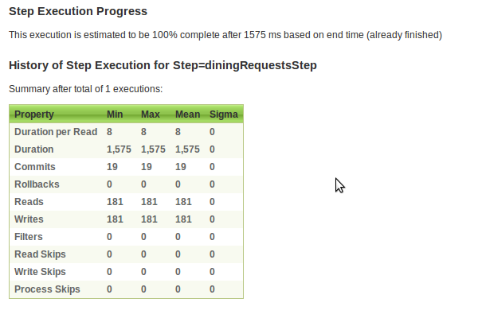
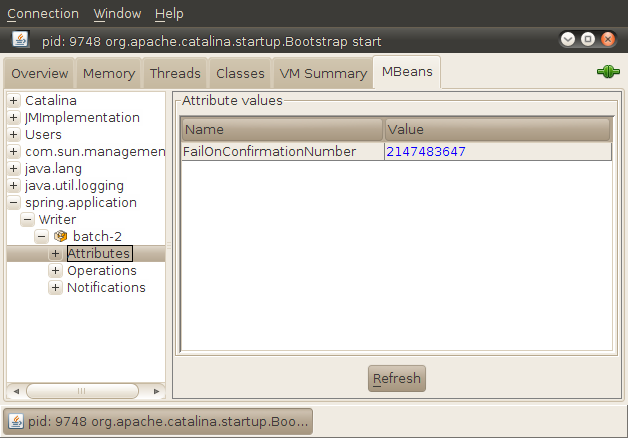
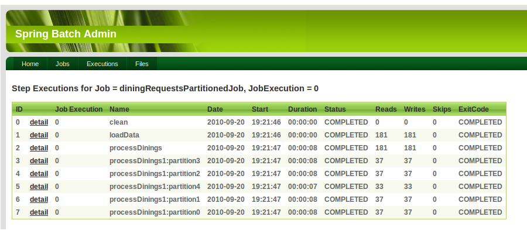

In this lab you'll see how Spring Batch Admin provides a UI to launch, manage and inquire status of batch jobs. You will also see how you can partition input data to improve batch throughput.
What you will learn:
Starting, stopping, and restarting batch jobs using Batch Admin
Examining the status of running and completed jobs with batch admin
Configuring a job for parallel execution using partitioning
Specific subjects you will gain experience with:
The Batch Admin UI
Implementing a partitioned job
Estimated time to complete: 45 minutes
The instructions for this lab are organized into sections.
The batch-admin lab consists of the Batch Admin sample UI application, with a version of the
diningRequestsJob job from the batch-restart-recovery lab deployed.
(TODO 01): Right click the batch-admin project and select Run As...->Run on Server.
STS will open a browser view containing the home page; use that view or a stand-alone browser with URL
http://localhost:8080/batch-admin/
to explore the UI.
Select Jobs; you should see a page showing the diningRequestsJob; click the job name. In the
Job Parameters field, enter input.resource.path=diningRequests.csv; click
Launch.
Drill down to the Step Execution details (use the slides for reference); you should see that the job executed 181 reads and writes, like this:
|  |
(TODO 02): The Batch Admin Sample UI application loads each job in a separate application context, to
avoid clashes between bean names etc. Each batch job is placed in a separate config file
under src/main/resources/META-INF/spring/batch/jobs. Take a look at the job file there;
notice that we have added an incrementer to the job. Take a look at
the implementation of that incrementer. This allows us to submit multiple executions of
the same job, with the same job parameters, without Spring Batch attempting to restart
a previous job instance.
Also notice the src/main/resources/META-INF/override folder. Beans declared in files in this folder override those in the batch admin jars.
(TODO 03 - TODO 04): Open the ReportWriter class and expose the writer as an MBean and expose the
failOnConfirmationNumber as an MBean Attribute.
Stop Tomcat and restart it with JMX enabled.
![[Tip]](images/tip.png) | Connecting using JConsole |
|---|---|
Either in the launch configuration for Tomcat, or by setting it as a default in the 'Installed JREs' under Window | Preferences, you need to set the following VM argument -Dcom.sun.management.jmxremote If you are unfamiliar with how to do this, ask your instructor. |
Now, open a windows command prompt (Start->Run->'cmd'), and type
C:\> jconsole
| Tip |
|---|---|
JConsole is the default JMX console that ships with Java, versions 5.0 and greater. It's located in the bin directory of the JDK home: if that's not on your path, then 'cd' into that directory first! You may find it more convenient to double click jconsole.exe in the bin directory. |
When the JConsole connection dialog appears, select the org.apache.catalina.startup.Bootstrap process and click 'Connect'. After a few moments, you'll be presented with the following screen.
 |
| Tip |
|---|---|
If you cannot see the catalina process in JConsole (in the 'Local Process' section) or the connect times out, it is possible you do not have adequate security rights in your environment. In this case, you will have to connect to the process via a socket connection instead. In the VM arguments tab of your launch configuration, add the following arguments:
-Dcom.sun.management.jmxremote.port=8181
-Dcom.sun.management.jmxremote.authenticate=false
-Dcom.sun.management.jmxremote.ssl=false
Then restart Tomcat, and connect via JConsole by using the 'Remote Process' selection, specifying a host of localhost and port of 8181. |
Navigate to the MBeans tab and open 'spring.application'; navigate to the FailOnConfirmationNumber attribute, shown here.
|  |
Set the attribute to, say, 55, and click Refresh to confirm.
Return to the browser and start a new execution of the job.
Navigate to the step execution details as before and note that the job failed to complete and look at the number of rows processed.
Return to JConsole and reset the attribute to at least 200.
Return to the browser, navigate to the page for the failed execution and restart the job.
Navigate to the step execution results and see that the remaining rows were processed.
Congratulations! You have successfully tested job restart and recovery.
In this section you will see how we can manually stop a batch job, and restart it from where it was stopped.
Our test batch job completes very quickly. Here we will introduce a pause so the job takes several minutes to complete.
(TODO 05): Open the ReportWriter and introduce a delay, simulating
that it takes 1 second to process each item.
Redeploy the project using Run As...->Run on Server...
Navigate to the Job and launch it, again with job parameter 'input.resource.path=diningRequests.csv'.
In the browser, navigate to the step execution and note that the job is progressing (slowly).
Navigate to the job execution and stop the job. Navigate to the step execution; confirm the step and job are stopped and observe how many items were processed.
Navigate to the job execution and click the 'Restart' button. Allow the job to complete and observe that the total items processed is 181 for the job instance (across both executions).
Congratulations! You have successfully stopped and restarted a job.
In this section, you will gain experience configuring and running a partitioned batch job. The
partitioning uses a simple Partitioner that finds the minimum and maximum
primary keys in a table to obtain a count of rows and then calculates the number of rows in the
partition.
| Tip |
|---|---|
This technique only works if the primary keys are uniformly distributed; a more sophisticated partitioning technique may be necessary for other situations. |
The job has several steps; the first step deletes all data from temporary tables; the second step loads the data from the flat file into a temporary table (T_DINING_REQUEST); the third step partitions the data and processes each partition, with the results being written to a temporary table that can be used later to generate a report.
(TODO 06): Take a look in src/main/resources and open the file partition-schema.sql.
We need to add this script to the database initializer. Open
src/main/resources/META-INF/spring/batch/override/data-source-context.xml
and include the additional schema script.
| Tip |
|---|---|
Files in src/main/resources end up on the classpath in the war file.
Given this is the location of the schema file, no folders are needed when using the
classpath: modifier in the location attribute.
|
(TODO 07): As mentioned above, Spring Batch Admin looks for job definitions under META-INF/spring/batch/jobs
on the classpath. A start for the partitioned job has been provided for you, under
src/main/resources.
Move partition-rewards-job-config.xml from src/main/resources to
src/main/resources/META-INF/spring/batch/jobs (alongside the existing
batch-job-config.xml).
(TODO 08): Review the ColumnRangePartitioner class;
open the partion-rewards-job-config.xml
and complete the configuration for the ColumnRangePartitioner.
| Tip |
|---|---|
Some of the information you need for this task is in the schema file you just added to to the database initializer. |
Redeploy the project on Tomcat; when the home page is displayed, select Jobs. You should now see a second
job diningRequestsPartitionedJob. Select that job and launch it with Job Parameters
input.resource.path=diningRequests.csv.
Wait for the execution to complete; and drill down to the Step Executions. You should see something similar to this:
|  |
See that there are 5 partitions (4 of 37 rows and 1 of 33 for a total of 181 rows as before).
Make a note of the elapsed time of the processDinings step - the 'master' step
that ran the partitions.
(TODO 09): Open the partion-rewards-job-config.xml file and find
the grid-size attribute on the processDinings step. Change
the grid-size to, say, 10. Save, redeploy and re-run the test.
Drill down to the Step Executions and note the new elapsed time for the master step.
Congratulations! You have completed the lab.